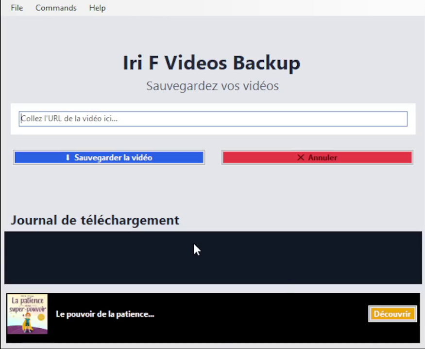
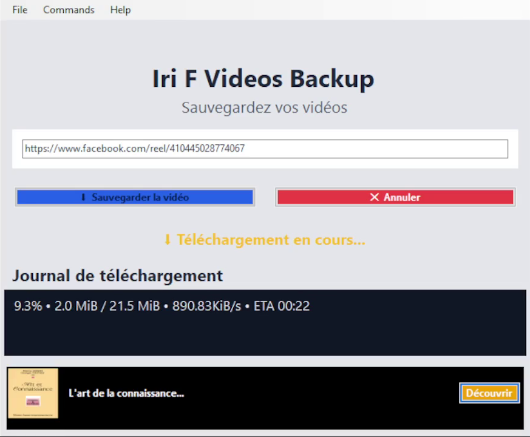
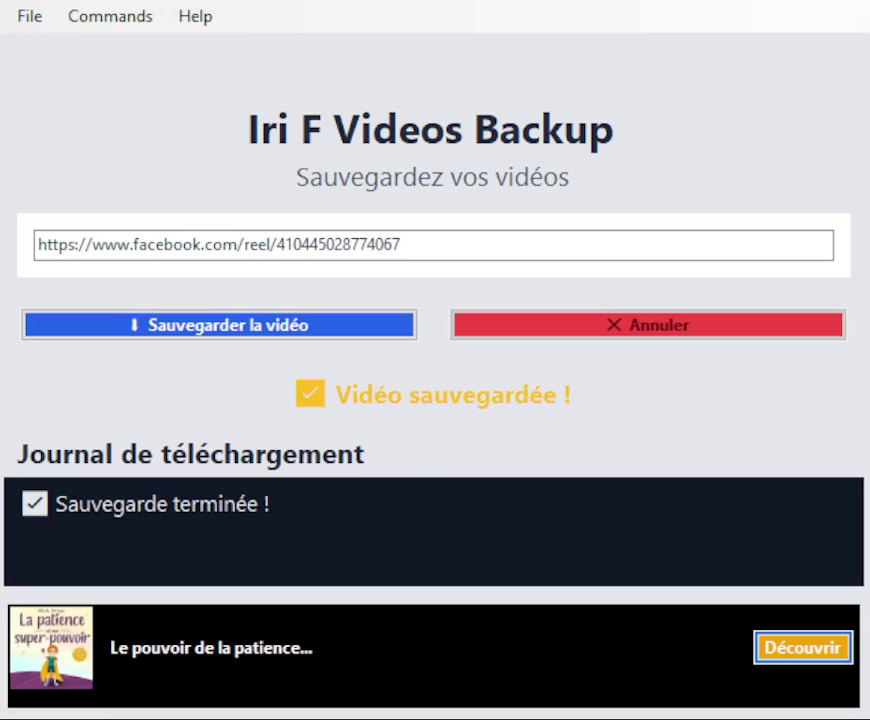

IIBManager
Sauveur universel pour vidéos et fichiers
Sauvegardez vos propres vidéos (YouTube, TikTok, Vimeo, Dailymotion...)
et vos fichiers (PDF, images, ZIP) en un clic.
✨ Fonctionnalités
Vidéos HD/4K
YouTube, TikTok, Dailymotion, Vimeo, Twitch, Facebook, Instagram...
Tous Fichiers
PDF, images, ZIP, EXE, documents, audios, et plus encore
Reprise Intelligente
Téléchargements interrompus repris automatiquement
Multilingue
Français, English, العربية
Barre d'état
Se cache dans la barre des tâches comme IDM
Détection automatique
Capture automatique des URLs du presse-papiers
Support cookies
Pour vos connexions navigateurs
ffmpeg inclus
Merge vidéo/audio automatique en haute qualité
📖 À propos d'IIBManager
IIBManager est un logiciel de téléchargement professionnel développé pour répondre aux besoins croissants de sauvegarde de contenu multimédia. Que vous soyez un créateur de contenu souhaitant archiver vos productions, un étudiant ayant besoin de sauvegarder des ressources pédagogiques, ou simplement un utilisateur voulant conserver ses vidéos préférées en local, IIBManager offre une solution complète et intuitive.
Notre mission est de démocratiser l'accès aux outils de téléchargement professionnel en proposant une interface moderne, des performances optimisées et un support technique réactif. Avec plus de 10 000 téléchargements et une communauté grandissante, IIBManager s'impose comme une référence dans le domaine des gestionnaires de téléchargement pour Windows.
Le logiciel est régulièrement mis à jour pour supporter les derniers changements des plateformes comme YouTube, TikTok et Dailymotion, garantissant ainsi une compatibilité optimale. Notre engagement est de fournir un outil fiable, sécurisé et respectueux des droits d'auteur.
💬 Témoignages utilisateurs
"⭐⭐⭐⭐⭐ - IIBManager a complètement changé ma façon de sauvegarder mes vidéos. L'interface est super intuitive et la vitesse de téléchargement est impressionnante. Je peux enfin archiver toutes mes créations TikTok sans perdre de temps."
"⭐⭐⭐⭐⭐ - En tant que formateur en ligne, j'ai besoin de sauvegarder régulièrement des vidéos éducatives. IIBManager me fait gagner un temps précieux avec sa détection automatique et sa reprise intelligente. Un outil indispensable !"
"⭐⭐⭐⭐ - Excellent logiciel ! La version d'essai de 15 jours m'a permis de tester toutes les fonctionnalités. Le support technique est très réactif et a répondu à toutes mes questions. Je recommande vivement."
📊 Comparatif avec les concurrents
| Fonctionnalité | IIBManager | IDM (Payant) | 4K Video Downloader |
|---|---|---|---|
| Téléchargement vidéo YouTube 4K | ✅ Oui | ✅ Oui | ✅ Oui |
| Téléchargement TikTok | ✅ Oui | ❌ Non | ✅ Oui |
| Téléchargement fichiers (PDF, ZIP) | ✅ Oui | ✅ Oui | ❌ Non |
| Période d'essai | 15 jours | 30 jours | Freemium |
| Prix après essai | Modique | Élevé (29.95$) | Abonnement |
| Support multilingue | 3 langues | Multilingue | Multilingue |
| Reprise automatique | ✅ Oui | ✅ Oui | ❌ Non |
Conclusion : IIBManager offre le meilleur rapport qualité-prix avec des fonctionnalités uniques comme le support TikTok et le téléchargement de tous types de fichiers, le tout à un prix accessible.
📥 Téléchargement
📸 Aperçu de l'Interface

Interface principale moderne

Téléchargement vidéo 4K

Gestionnaire de fichiers intégré
❓ Foire Aux Questions
Comment ça marche ?
Copiez une URL vidéo ou fichier, collez-la dans le logiciel, choisissez la qualité et téléchargez en un clic.
Y a-t-il une version d'essai ?
Oui, 15 jours d'essai gratuit. L'abonnement est à prix modique pour soutenir le développement.
Est-ce légal ?
L'outil est parfaitement légal. L'utilisateur est seul responsable du contenu téléchargé.
Pourquoi choisir IIBManager ?
Simple, rapide, sans publicité, interface professionnelle et support technique réactif.
Comment signaler un bug ?
Créez une issue sur GitHub ou contactez l'auteur par email.
Quelles sont les alternatives ?
IDM (payant), 4K Video Downloader (freemium), yt-dlp (CLI).
📜 Licence
IIBManager - Licence propriétaire
Copyright © 2026 IRNAM MOHAMED - Tous droits réservés
Ce logiciel est la propriété exclusive de IRNAM MOHAMED. Il est protégé par le droit d'auteur.
✅ Vous avez le droit de :
- Utiliser le logiciel sur vos ordinateurs personnels
- Faire une copie de sauvegarde du logiciel
- Utiliser la version d'essai gratuitement pendant 15 jours
❌ Vous n'avez PAS le droit de :
- Vendre, redistribuer ou louer le logiciel
- Désassembler, décompiler ou modifier le code source
- Contourner le système de licence
- Utiliser le logiciel pour des activités illégales
⚠️ Avertissement : L'utilisateur est seul responsable de l'utilisation qu'il fait du logiciel.
Le téléchargement de vidéos protégées par le droit d'auteur sans autorisation peut être illégal.
🙏 Crédits
IIBManager utilise les bibliothèques et outils open-source suivants :
Licence Unlicense - github.com/yt-dlp/yt-dlp
Licence Apache 2.0 - github.com/psf/requests
Licence GNU GPL v3.0 - ffmpeg.org
Licence MIT - kivy.org
Licence GPL v2.0 - pyinstaller.org